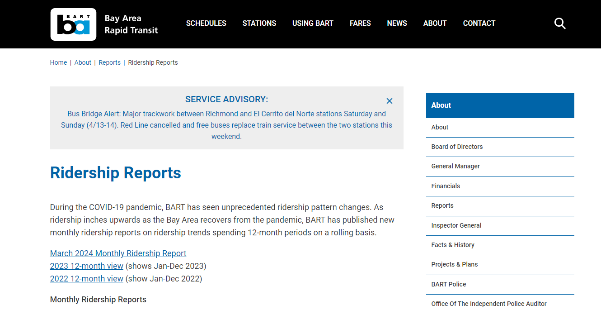
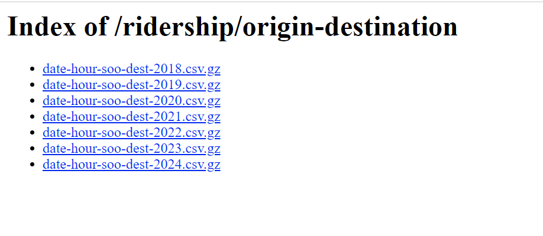
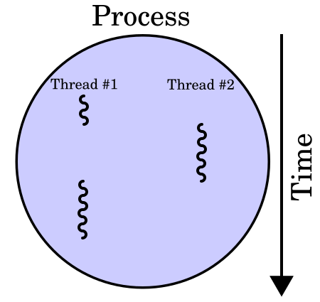
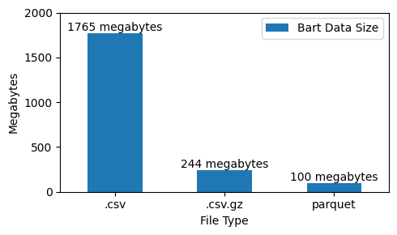
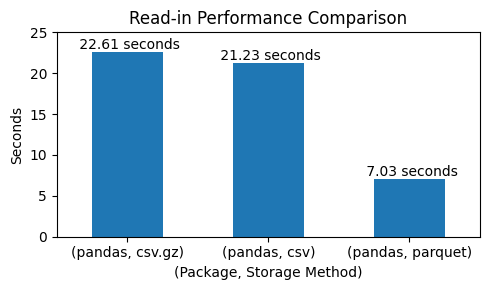
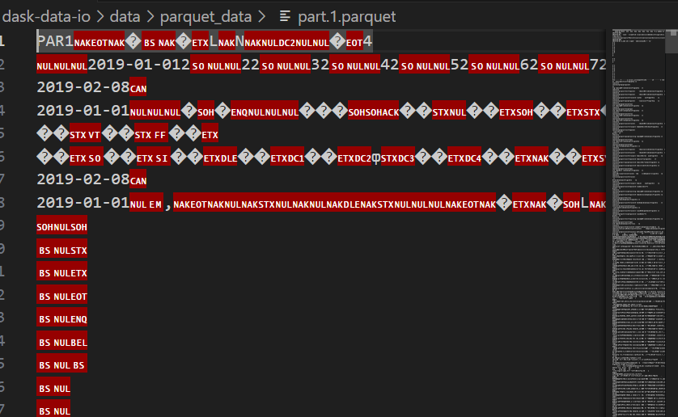
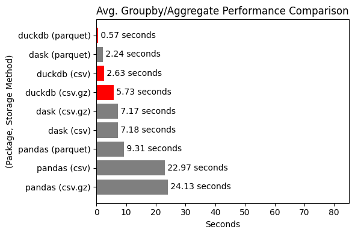

flowchart LR
C[("Download all files<br>Convert+store for analytics<br>")]
subgraph one ["One time setup"]
C
end
%% Weekly incremental update and analytics
subgraph weekly ["Data update cycle"]
direction LR
C --> F[("Download new file")]
end
subgraph analytics ["Analytics workflow"]
F --> H{{"Read-in data<br>Group/Aggregate data<br>Produce summary tables"}}
end
%% Outputs
F --> Z{{Ad-hoc Analyses}}
style one fill:none
style weekly fill:none
style analytics fill:none
I spend a lot of time at work and in hobby projects working locally with data large enough to strain my laptop’s memory.1 Thankfully, there is a growing variety of tools that allow Python users to leverage novel computation and compression methods to make working with large data on a laptop easier than ever. However, while tech-ing up with efficient packages/workflows can win back significant data processing time, this often comes at the cost of making code harder to read and maintain. So when is it worth it to adopt the newest and the greatest data processing tools, and when is it better to stick with the tied-and-true?
In this post, I’ll look at three methods/tools that I’ve been interested in using to speed up local data processing in Python: threaded downloads, column oriented storage, and fast pandas alternatives. I’ll critically evaluate each method in the context of an example exercise, and I’ll think about why (or why not) they make sense for me, examining speed gains2 and how complex the code is for each method.
Note that this is not any sort of definitive benchmarking. There are many benchmarks out there, but Ideally my informal evaluations can serve as examples of how one could generally evaluate how new tools do or don’t fit into a given project and why.
Exercise Description
I motivate this post with an exercise – building a data analytics pipeline.
I 1.) retrieve, 2.) store, and 3.) analyze historical data on Bay Area Rapid Transit (BART) ridership at the station/hour level3. The whole pipeline is mapped out in the following diagram:
Different tools help at each of the three parts of that pipeline. Indeed, I find that at every stage of the pipeline there is a tool that can meaningfully speed things up:
| Technique | Effect in Exercise |
|---|---|
Retrieval: Use concurrent.futures to distribute downloads across “threads”. |
1x ~20% faster download time.4 |
| Storage: Use the Apache Parquet format to store data in column orientation. | 1x ~50% reduction in data storage size.5 |
| Analysis: Use DuckDB to read in and manipulate data w/ online analytical processing. | Repeated ~90% reduction in groupby/aggregate time.6 |
While each method produces an observable speedup, they aren’t all worth it for my use case! Read on to see why…
Library imports
import pandas as pd
import numpy as np
import dask.dataframe as dd
import duckdb
# Timers
from dask.diagnostics import ProgressBar
import time
# I/O Utilities
import warnings
import os
import glob
import requests
import csv
from bs4 import BeautifulSoup
import re
import shutil
from datetime import datetime
import gc
from concurrent.futures import ThreadPoolExecutor, as_completed
# Display
import matplotlib.pyplot as plt1. Data Retrieval
In this section, I complete a data retrieval exercise and evaluate “threading” – a method that speeds up batch downloads.
Key Takeaways:
Python’s concurrent.futures module can speed up bulk downloads, but the API is much more complex than a for-loop, to the point that it’s not worth it for my used case. Use threading when you’re downloading a lot of files at a time and you want a speedup – don’t default to it for small jobs.
Pre-requisites
- For-loops and basic control flow in Python
- Familiarity with web data retrieval (e.g.
BeautifulSoup)
The first thing I need for my example data pipeline is data. I’m going to set up a data retrieval pipeline that involves 1 bulk download of all of BART’s hourly ridership data files, accessible via the BART data portal, and a monthly update where the newest file is re-downloaded to reflect a new week’s data.

BART doesn’t have an API per se, but the files are stored on a very computer-accessible webpage. The specific url is as follows:
url = 'https://afcweb.bart.gov/ridership/origin-destination/'
url'https://afcweb.bart.gov/ridership/origin-destination/'This is a very simple page with direct download links to each year’s ridership data in compressed .csv.gz files.

Recall that my first task is to download all of these files. Technically, this means that I will need to iterate through each of the links, downloading the files one by one. To accomplish that, I’ll start by setting up a retrieval script where I get the page html via requests, then parse the html via BeautifulSoup.
response = requests.get(url)
if response.status_code == 200:
soup = BeautifulSoup(response.text, 'html.parser')
else:
print("Failed to retrieve the webpage")Within the page, my target is the set of .csv.gz (compressed .csv files), each of which contain hourly ridership totals between each station pairing in the BART system. These are all links in <a> </a> HTML tags, and have an href that ends in .csv.gz. BeautifulSoup makes isolating those links easy:
links = soup.find_all(
name='a',
href=lambda x: x and x.endswith(".csv.gz")
)
# example link
files = [link.get('href') for link in links]
files[0]--------------------------------------------------------------------------- NameError Traceback (most recent call last) Cell In[1], line 1 ----> 1 links = soup.find_all( 2 name='a', 3 href=lambda x: x and x.endswith(".csv.gz") 4 ) 5 # example link 6 links[0] NameError: name 'soup' is not defined
I’ve now captured the filename and I’ll convert this to a full url by concatenating the base url to each of the files’ relative urls. This leaves us with direct links that each prompt the download of one year’s worth of hourly trip totals between the station pairings in the system. This is our target data.
file_urls = [url + f for f in files]
file_urls['https://afcweb.bart.gov/ridership/origin-destination/date-hour-soo-dest-2018.csv.gz',
'https://afcweb.bart.gov/ridership/origin-destination/date-hour-soo-dest-2019.csv.gz',
'https://afcweb.bart.gov/ridership/origin-destination/date-hour-soo-dest-2020.csv.gz',
'https://afcweb.bart.gov/ridership/origin-destination/date-hour-soo-dest-2021.csv.gz',
'https://afcweb.bart.gov/ridership/origin-destination/date-hour-soo-dest-2022.csv.gz',
'https://afcweb.bart.gov/ridership/origin-destination/date-hour-soo-dest-2023.csv.gz',
'https://afcweb.bart.gov/ridership/origin-destination/date-hour-soo-dest-2024.csv.gz',
'https://afcweb.bart.gov/ridership/origin-destination/date-hour-soo-dest-2025.csv.gz']Before proceeding to download all of it for local storage, I’ll profile the sizes of each file and the total download just to get an idea of the bulk download task parameters.
counter = 1
total_size = 0
for f in file_urls:
response = requests.head(f)
file_size = int(response.headers.get('Content-Length', 0))
total_size += file_size
print(f"File {counter} size: {round(file_size*10e-7, 2)} mega-bytes")
counter += 1
print(f"Total size of data: {total_size*10e-7} mega-bytes")File 1 size: 38627139 bytes (38.63 mega-bytes)
File 2 size: 38177159 bytes (38.18 mega-bytes)
File 3 size: 21415653 bytes (21.42 mega-bytes)
File 4 size: 24350926 bytes (24.35 mega-bytes)
File 5 size: 30546036 bytes (30.55 mega-bytes)
File 6 size: 32224174 bytes (32.22 mega-bytes)
File 7 size: 33142435 bytes (33.14 mega-bytes)
File 8 size: 25776782 bytes (25.78 mega-bytes)
Total size of data: 244.260304 mega-bytesThese file sizes look manageable enough. I’ll proceed to download all of this into a folder, data, and since we are storing a semi-large amount of data in data, I will also set up a .gitignore to make sure that it doesn’t end up being tracked in version control.
# Create a .gitignore file
gitignore_content = "data/\n" # Content to exclude the "data" folder
with open('.gitignore', 'w') as gitignore_file:
gitignore_file.write(gitignore_content)To actually download the data, I’ll start by setting up a generic download function that I can apply to each link.
def download_file(url:str, filename:str) -> str:
"""Downloads a file from a given URL
and saves it with the specified filename."""
response = requests.get(url, timeout=30)
if response.status_code == 200:
with open(filename, "wb") as file:
file.write(response.content)
return f"Downloaded: {filename}"
else:
return f"Failed ({response.status_code}): {url}"Next, I’ll create some logic for our batch download, based around a for-loop wth conditions:
- Download each file from the list of links:
- make sure that the ingest doesn’t re-download files that I already have downloaded locally.
- UNLESS, it the data is from the current year, in which case it should be re-downloaded to reflect any updates since the last download.
These conditions should ensure that we don’t waste time and bandwidth re-downloading files that we already have, and that we always have the most up-to-date data for the current year.
def download_bart_file(url: str) -> str:
"""Downloads BART ridership data file if not
already present or if it's current year data."""
current_year: str = str(datetime.today().year)
filename: str = os.path.join("data", os.path.basename(url))
file_year: str = re.search(r"\d{4}", url)
current_year_data: bool = file_year and file_year[0] == current_year
if os.path.exists(filename) and not current_year_data:
return f"Skipped (already exists): {filename}"
elif os.path.exists(filename) and current_year_data:
download_file(url, filename)
else:
download_file(url, filename)Threading
When downloading a series of files via a for-loop, we typically have to wait for the sequential execution of each loop iteration to finish. Thread-based parallelism, or, threading, can speed things up by allowing us to run several iterations of the for-loop at a time. More generally, threading allows us to break any process7 into smaller units (threads) and run them concurrently on shared memory to complete the larger process faster.

To implement threading for this loop, I’ll use python’s concurrent.futures.ThreadPoolExecutor class, a high-level object that makes it easy to distribute for-loop iterations across threads.
with ThreadPoolExecutor(max_workers=10) as executor:
futures = [executor.submit(download_bart_file, url) for url in file_urls]
for f in as_completed(futures):
f.result()100%|██████████| 8/8 [00:05<00:00, 1.54it/s]The raw data is now downloaded and stored locally in data.
Is threading worth it?
The task at hand involves downloading files, which is an I/O bound task – much of the execution time is spent waiting for downloads to be completed. Threading allows one to run I/O bound processes “concurrently.” When one “thread” is waiting for a download to complete, another thread can download a different file. If the task were CPU bound – where most of the execution time is spent on computation – we would see less of or else no threading premium.8
Threads are particularly useful when tasks are I/O bound, such as file operations or making network requests, where much of the time is spent waiting for external resources.
– Python docs
Given that theoretical motivation, let’s run a simple comparison of a sequential for-loop approach vs. threaded downloads of the BART data:
Threading Speedup, Single Trial
# Add the test results to .gitignore
gitignore_path = ".gitignore"
entry = "data_bench/"
if os.path.exists(gitignore_path):
with open(gitignore_path, "r") as f:
lines = [line.strip() for line in f.readlines()]
else:
lines = []
if entry not in lines:
lines.append(entry)
with open(gitignore_path, "w") as f:
f.write("\n".join(lines) + "\n")
# Set up the output directory and parameters
OUTDIR = "data_bench"
MAX_WORKERS = 10 # number of parallel threads
os.makedirs(OUTDIR, exist_ok=True)
def make_filename(url: str) -> str:
"""Generate a local filename for each URL."""
name = os.path.basename(url)
if not name:
name = "download"
return os.path.join(OUTDIR, name)
def download_one(url: str) -> str:
"""Download a single file and save it to OUTDIR."""
filename = make_filename(url)
try:
response = requests.get(url, timeout=30)
if response.status_code == 200:
with open(filename, "wb") as file:
file.write(response.content)
return f"Downloaded: {filename}"
else:
return f"Failed ({response.status_code}): {url}"
except Exception as e:
return f"Error downloading {url}: {e}"
# Benchmark functions
def reset_outdir():
"""Wipe and recreate the output folder."""
if os.path.exists(OUTDIR):
shutil.rmtree(OUTDIR)
os.makedirs(OUTDIR)
def run_sequential(urls):
"""Download files one by one."""
reset_outdir()
start = time.perf_counter()
for url in urls:
download_one(url)
end = time.perf_counter()
return end - start
def run_parallel(urls):
"""Download files in parallel using ThreadPoolExecutor."""
reset_outdir()
start = time.perf_counter()
with ThreadPoolExecutor(max_workers=MAX_WORKERS) as executor:
futures = [executor.submit(download_one, url) for url in urls]
for f in as_completed(futures):
f.result()
end = time.perf_counter()
return end - start
# Run both and compare
RUN = False
if RUN:
print("Test with sequential for-loop...")
seq_time = run_sequential(file_urls)
print(f"Sequential for-loop total download time: {seq_time:.2f}s\n")
print(f"Test with {MAX_WORKERS} concurrent threads...")
par_time = run_parallel(file_urls)
print(f"Threaded total download time: {par_time:.2f}s\n")
if par_time > 0:
print(f"Threading Speedup: {seq_time / par_time:.2f}× faster")
else:
print(
"""Test with sequential for-loop...
Sequential for-loop total download time: 11.80s
Test with 10 concurrent threads...
Threaded total download time: 9.24s
Threading Speedup: 1.28× faster (2.56 seconds)."""
)Test with sequential for-loop...
Sequential for-loop total download time: 11.80s
Test with 10 concurrent threads...
Threaded total download time: 9.24s
Threading Speedup: 1.28× fasterIn that trial, threading is good for a speedup. However, there’s plenty of noise in I/O speeds, so we’ll run the benchmark multiple times and look at the average9 speedup and bootstrap a confidence interval:
Threaded Speedup Experiment
# --- Config ---
N_TRIALS = 10
DELAY_BETWEEN_TRIALS = 120 # seconds (2 minutes)
RESULTS_CSV = "benchmark_results.csv" # stored outside data_bench
def make_trial_filename(url: str, download_dir: str) -> str:
name = os.path.basename(url) or "download"
return os.path.join(download_dir, name)
def trial_download_one(url: str, download_dir: str) -> None:
filename = make_trial_filename(url, download_dir)
r = requests.get(url, timeout=30)
if r.status_code == 200:
with open(filename, "wb") as f:
f.write(r.content)
else:
raise RuntimeError(f"HTTP {r.status_code} for {url}")
def reset_dir(path: str):
if os.path.exists(path):
shutil.rmtree(path)
os.makedirs(path)
def run_sequential(urls, download_dir) -> float:
reset_dir(download_dir)
t0 = time.perf_counter()
for u in urls:
trial_download_one(u, download_dir)
return time.perf_counter() - t0
def run_parallel(urls, download_dir) -> float:
reset_dir(download_dir)
t0 = time.perf_counter()
with ThreadPoolExecutor(max_workers=MAX_WORKERS) as ex:
futs = [ex.submit(trial_download_one, u, download_dir) for u in urls]
for f in as_completed(futs):
f.result()
return time.perf_counter() - t0
# --- Safety check ---
if os.path.exists(RESULTS_CSV):
full_data = pd.read_csv(RESULTS_CSV)
data = full_data['speedup_seq_over_par']
print(f"Experiment Results, n={len(data)}")
print("Bootstrap distribution of geometric mean speedup (threaded/for-loop ratio):")
# Bootstrap the *mean of log ratios*
bootstrapped = pd.Series([np.log(data.sample(frac=1, replace=True, random_state=i)).mean()
for i in range(100)])
bootstrapped = (bootstrapped).round(4)
# Formula for geometric mean
ci = np.round(np.exp(bootstrapped).quantile(q=[0.025, 0.975]) - 1, 4)
print("Estimate (50th pct):", np.round(np.exp(bootstrapped).quantile(q=.5) - 1, 4))
print("CI (2.5th-97.5th pct):", list(ci))
else:
# --- CSV setup ---
header = [
"timestamp_iso",
"trial",
"n_urls",
"max_workers",
"order",
"seq_time_s",
"par_time_s",
"speedup_seq_over_par"
]
with open(RESULTS_CSV, "w", newline="") as f:
csv.writer(f).writerow(header)
# --- Trials ---
for trial in range(1, N_TRIALS + 1):
ts = datetime.now().isoformat(timespec="seconds")
urls = list(file_urls)
seq_dir = os.path.join(OUTDIR, f"trial_{trial:02d}_seq")
par_dir = os.path.join(OUTDIR, f"trial_{trial:02d}_par")
# Alternate order
if trial % 2 == 1:
order = "sequential_first"
seq_time = run_sequential(urls, seq_dir)
par_time = run_parallel(urls, par_dir)
else:
order = "parallel_first"
par_time = run_parallel(urls, par_dir)
seq_time = run_sequential(urls, seq_dir)
speedup = (seq_time / par_time) if par_time > 0 else float("inf")
print(
f"[{ts}] Trial {trial}/{N_TRIALS} ({order}) | "
f"Sequential: {seq_time:.3f}s | Parallel: {par_time:.3f}s | Speedup: {speedup:.2f}×"
)
# Save to CSV
with open(RESULTS_CSV, "a", newline="") as f:
csv.writer(f).writerow([
ts, trial, len(urls), MAX_WORKERS, order,
f"{seq_time:.6f}", f"{par_time:.6f}", f"{speedup:.6f}"
])
# --- Wipe downloaded data ---
if os.path.exists(OUTDIR):
shutil.rmtree(OUTDIR)
os.makedirs(OUTDIR)
print(f"Wiped data after trial {trial}")
# Delay between trials
if trial < N_TRIALS:
print(f"Waiting {DELAY_BETWEEN_TRIALS} seconds before next trial...\n")
time.sleep(DELAY_BETWEEN_TRIALS)
print(f"\nSaved results to: {RESULTS_CSV}")Experiment Results, n=20
Bootstrap distribution of geometric mean speedup (threaded/for-loop ratio):
Estimate (50th pct): 0.1987
CI (2.5th-97.5th pct): [0.1336, 0.2649]So across 20 trials we see a real speedup from threading– about a 20% faster total download time, with a 95% Confidence Interval [13%, 26%]. In absolute terms, that’s about a 1-second speedup:
rng = np.random.default_rng(0)
B = 50_000 # number of bootstrap replicates
# paired differences per trial/run
diff = (full_data['seq_time_s'] - full_data['par_time_s']).dropna().to_numpy()
n = diff.size
# resample indices with replacement, compute median per replicate
idx = rng.integers(0, n, size=(B, n))
boot_median_diff = np.median(diff[idx], axis=1)
q2p5, q50, q97p5 = np.percentile(boot_median_diff, [2.5, 50, 97.5])
print(
f"Bootstrap median(For-loop - Threaded) [2.5%, 50%, 97.5%]: "
f"[{q2p5:.3f}, {q50:.3f}, {q97p5:.3f}] seconds"
)
print(
"Δ median (For-loop − Threaded)\n",
f"95% CI: [{q2p5:.2f}, {q97p5:.2f}] s\n",
f"median: {q50:.2f} s",
)Code
fig, ax = plt.subplots(figsize=(5, 3))
melted_data = full_data[['seq_time_s', 'par_time_s']].melt(var_name='Retrieval method', value_name='Time (s)')
melted_data['Retrieval method'] = melted_data['Retrieval method'].map({'seq_time_s': 'For-loop', 'par_time_s': 'Threaded'})
melted_data.groupby('Retrieval method').median().round(2).plot.bar(ax=ax)
ax.bar_label(ax.containers[0], fmt="%g seconds")
ax.set(ylabel='Median Download Time (Seconds)', xlabel='For-loop vs. Threaded')
ax.set_ylim(0, 8)
ax.tick_params(axis='x', rotation=0)
fig.tight_layout()
fig.savefig('fig1.png', dpi=300)Important Caveats
Clearly threading is having an impact, but let’s put that benefit in the context of the whole data retrieval pipeline:
flowchart LR
C[("Download files<br>Convert+store for analytics<br>")]
subgraph one ["One time setup"]
C
end
%% Weekly incremental update and analytics
subgraph weekly ["Weekly data update cycle"]
direction LR
C --> F[("Re-download newest file")]
end
style one fill:none
style weekly fill:none
Threading helps us download all of the files, but we only do that once. Our recurring data update, where we re-download the newest data file at a time will see no benefit from threading because we are only re-downloading one file.
So, overall, we used threading to achieve a one-time, one second speedup.
This benefit is marginal, and it’s introduced a real cost – code complexity. Consider the vanilla for-loop approach:
The for-loop and clear variable naming make the code self-explanatory: for each url in the list of file urls, download the file. Now consider the threaded code:
Threaded data retrieval code
Even programmers with extensive exposure to Python may experience difficulty reading this code, which includes elements unique to the concurrent.futures API, a list comprehension, and a context manager with statement. This cost means people – and yourself in a few months – will spend extra time trying to understand this code that they wouldn’t have spent on the for-loop. I can almost guarantee that’s going to offset the 1 second speedup we got for the effort.
Conclusion
Threading is great for I/O bound tasks like multiple file downloading, but it does make your code less readable. For large download jobs this is likely worth it, but threading may not be appropriate for smaller jobs due to the code complexity costs. In this example, the 1-2 seconds saved on the download will almost certainly be offset by the extra minutes it will take to read the complex code later.
Here’s an informal rating system to compare these techniques:
| Technique | Speed Benefit | Readability |
|---|---|---|
| vanilla for-loop | ⭐⭐ | ⭐⭐⭐⭐⭐ |
| threading | ⭐⭐⭐10 | ⭐⭐ |
Further reading
- “Faster Web Scraping” a blog post by Nick Decker
- “Threading” in the Python docs
- “How efficient is threading in Python?” a stackoverflow response by Jesse Cohen
2. Data Storage
In this section, I complete a data storage exercise and evaluate column oriented storage (parquet) – a technology that can make data storage and read-in more efficient than traditional .csv storage.
Key Takeaway:
parquet is a new technology that delivers exactly what I needed for this exerciseparquet) provides significant benefits for my application, but isn’t one-size fits all.
Pre-requisites
- Intermediate
pandas - Familiarity with file compression, e.g.
.zip, and binary data versus plain text
Now we have the data downloaded locally, but how should we permanently store it? We could keep the data in the compressed .csv.gz format that it came in, we could decompress the data and store it as plain .csv files, or we could convert the data to a more modern format for tabular data storage. One of the most exciting modern storage formats I’m aware of is Apache parquet, a column-oriented data storage format. parquet claims two core benefits over .csv-based formats:
parquetmakes tabular data files smaller.parquetdata can be read into memory much faster.
The format still has some weaknesses, and we’ll contextualize its benefits with its costs to accurately evaluate it. I’ll run a few benchmarks with .csv.gz, .csv, and .parquet storage options and evaluate the pros and cons.
We start with the .csv.gz we just downloaded, and to convert into .csv and parquet, I’m going to use dask, a python data frame library that allows for “lazily” reading in the full directory of .csv.gz files without having all the data in memory at once (more on dask in the next section).
all_csv_paths = ["data/" + f for f in os.listdir("data") if f.endswith(".gz")]
data = dd.read_csv(
all_csv_paths,
blocksize=None,
compression="gzip",
names=["Date", "Hour", "Start", "End", "Riders"],
)Dask DataFrame Structure:
| Date | Hour | Start | End | Riders | |
|---|---|---|---|---|---|
| npartitions=8 | |||||
| string | int64 | string | string | int64 | |
| ... | ... | ... | ... | ... | |
| ... | ... | ... | ... | ... | ... |
| ... | ... | ... | ... | ... | |
| ... | ... | ... | ... | ... |
Dask Name: read_csv, 1 expression
…
Now I’ll establish subdirectories in data for the parquet data and for the csv data, and write out to those folders using dask, with a progress bar to monitor how long this takes (note that these progress bars will not be visible in this document).
os.makedirs('data/parquet_data', exist_ok=True)
os.makedirs('data/csv_data', exist_ok=True)
pbar = ProgressBar()
pbar.register()
data.to_parquet('data/parquet_data', write_index=False)
data.to_csv('data/csv_data/full_data_*.csv', index=False)Is parquet worth it?
Now that we have the files saved, we can get a sense of how parquet compares to .csv and .csv.gz by looking at the data’s storage size and read-in time across formats.
Storage
For comparing storage size, I’ll write a helper function to calculate the total bytes of all the files in a given directory.
def get_local_bytes(directory: str) -> int:
contents: list[str] = os.listdir(directory)
contents_w_path: list[str] = [os.path.join(directory, f) for f in contents]
files_not_folders: list[str] = [f for f in contents_w_path
if os.path.isfile(f)]
return sum(os.path.getsize(f) for f in files_not_folders)The results are as follows:
Code
fig, ax = plt.subplots(figsize=(5, 3))
ax.set_ylim(0, 2000)
pd.DataFrame(
{
'.csv': [round(get_local_bytes('data/csv_data')*10e-7, 0)],
'.csv.gz': [round(get_local_bytes('data')*10e-7, 0)],
'parquet': [round(get_local_bytes('data/parquet_data')*10e-7, 0)]
}, index=['Bart Data Size']
).T.plot.bar(ax=ax)
ax.bar_label(ax.containers[0], fmt="%g megabytes")
ax.set(ylabel='Megabytes', xlabel='File Type')
ax.tick_params(axis='x', rotation=0)
fig.tight_layout()
fig.savefig('fig1.png', dpi=300)
Note that the very large discrepancy between .csv and .csv.gz is simple – the .csv.gz files are compressed (using gzip), whereas the .csv files are not. However, the parquet files are still significantly smaller than even the compressed .csv.gz files.
This is where the parquet magic is: parquet files are smaller than .csv.gz (and certainly smaller than uncompressed .csv) because they store data by column instead of by row — this is called column-oriented storage. That means all the values from one column (like all the BART station names) are stored together, e.g. [Civic Center, Civic Center, Fruitvale, Fruitvale], making patterns easier to spot and compress. Both parquet and .csv.gz are compressed formats, but a .csv.gz file, which is row-oriented, mixes all of the features (Date, Hour, Start Station, End Station, Number of Riders) together as text at the row level, e.g. [11/3/2020, Civic Center, Fruitvale, 10]. This mixed data doesn’t compress as well.
Read-in
Now, compression is one thing, but compressing a dataset is going to be less useful for our purposes if it slows down data read-in. We will be repeatedly reading in the data for the analytics portion of our exercise data pipeline. So, let’s also benchmark read-in times for each of these formats using pandas. Since read-in times can be noisy, I run each read-in multiple times and take the average time for each format.
Code
def files_for(glob_pat: str) -> list[str]:
files = sorted(glob.glob(glob_pat))
if not files:
raise FileNotFoundError(f"No files for pattern: {glob_pat}")
return files
def read_pandas_csv(glob_pat: str):
if glob_pat == "data/*.csv.gz":
return pd.concat((pd.read_csv(f, names=['Date', 'Hour', 'Start', 'End', 'Riders'], low_memory=False) for f in files_for(glob_pat)), ignore_index=True)
else:
return pd.concat((pd.read_csv(f, low_memory=False) for f in files_for(glob_pat)), ignore_index=True)
fig, ax = plt.subplots(figsize=(5, 3))
df = (read_pandas_csv('results/*.csv')
.query("stage == 'read'")
.query("engine == 'pandas'")
.groupby(['engine', 'filetype'])['seconds']
.mean()
.sort_values(ascending=False))
df.T.plot.bar(ax=ax)
ax.bar_label(ax.containers[0], fmt=" %.2f seconds")
ax.set_ylim(0, 25)
ax.set(ylabel='Average Seconds Elapsed', xlabel='(Package, Storage Method)')
ax.tick_params(axis='x', rotation=0)
ax.set_title('Read-in Performance Comparison')
fig.tight_layout()pandas read-in Comparison: .csv.gz, .csv, .parquet
parquet gives about 3x faster read-in times. Given that it also has such impressive compression properties, it seems to be ideal for storing analytical datasets. However, it’s not without faults…
Important Caveats
parquet’s small storage size and fast read-in are impressive, but I don’t want to give the impression that the format is a one-size-fits-all solution for data storage. One parquet’s most obvious limitations is that it is binary encoded (as opposed to the text-based .csv format), so it’s not human-readable.
.parquet file in VSCode
This means that spreadsheet programs like Excel and Google Sheets cannot open, let alone edit, parquet files. For large data that would strain the processing capacity of visual spreadsheet programs anyways, this hardly matters – data users would all be writing scripts to read in and analyze the data. However, with smaller scale data or any dataset that Excel and other spreadsheet users want to access, parquet is unusable due to its encoding.
For all its advantages, Parquet is very complicated […]. Up to a certain data size the advantage of CSV is not that it is a better format (it is decidedly, absolutely worse/more ambiguous than Parquet) but the fact that you can write a valid CSV in a couple of lines of anything, and read in a couple of lines of anything.
– Hacker News Comment by user @julik
Conclusion
Regardless of parquet’s complications, the format is unambiguously better than .csv (and certainly better than .csz.gz) for most data science/analytics input data. The small storage size and fast read-in times are astounding. parquet’s chief weakness – its binary encoding – is only a problem for data that needs to be human-readable, e.g. data output.
| Format | Low Storage | Read-in Efficiency | Human-readable |
|---|---|---|---|
csv |
⭐ | ⭐⭐ | ⭐⭐⭐⭐⭐ |
csv.gz |
⭐⭐⭐ | ⭐ | ⭐ (compressed) |
parquet |
⭐⭐⭐⭐⭐ | ⭐⭐⭐⭐⭐ | ⭐ (compressed) |
Further reading
- “Data orientation” on Wikipedia
- “Motivation” in the
parquetdocs - HackerNews discussion of
parquet
3. Data Analysis
In this exercise, I’ll complete an analytics exercise and evaluate data read-in and analysis efficiency of two modern Python libraries – dask and duckdb – that promise to beat pandas for typical data manipulation tasks.
Key Takeaway:
duckdb is fastpandas syntax to SQL makes code readable to a wider audience.
Pre-requisites
- Intermediate
pandas - Intermediate SQL
We can and will benchmark all of those formats just using pandas for read-in, but this is also a good opportunity to introduce two additional, modern tools for efficient data read-in and aggregation: dask and duckdb. These tools leverage concurrency, out of memory processing, online analytical processing, and other modern processing techniques and often far outperform standard pandas workflows.
start = time.time()
df = dd.read_parquet('data/parquet_data', low_memory=False).compute()
dask_parquet_end = time.time() - startNote that I called start = time.time() and dask_parquet_endtime = time.time() to store the time that it takes to complete this task.
Anyways, we just loaded in fairly large data:
print(f"Rows: {df.shape[0] :,}")
print("Columns:", df.shape[1])Rows: 65,576,115
Columns: 5and this data is now all in memory as a pandas dataframe, ready for typical use.
df.head()| Date | Hour | Start | End | Riders | |
|---|---|---|---|---|---|
| 0 | 2018-01-01 | 0 | 12TH | 16TH | 1 |
| 1 | 2018-01-01 | 0 | 12TH | BAYF | 1 |
| 2 | 2018-01-01 | 0 | 12TH | CAST | 3 |
| 3 | 2018-01-01 | 0 | 12TH | CIVC | 2 |
| 4 | 2018-01-01 | 0 | 12TH | CONC | 2 |
Further, dask completed that read-in task in what seems like a short amount of time:
print(round(dask_parquet_end, 2), "seconds")2.24 secondsIndeed, here’s how long pandas takes for the same task:
start = time.time()
df = pd.read_parquet('data/parquet_data')
pd_parquet_end = time.time() - start
print(round(pd_parquet_end, 2), "seconds")6.58 secondsAs an aside, I highly recommend watching the “Background” section of this talk for some basic information on dask and how it differs from Spark, DuckDB, and polars. The talk also features some comprehensive benchmarks of dask and establishes the core differences between [dask and Spark] in one group, and [polars and DuckDB] in the other.
Are pandas alternatives worth it?
Clearly there’s something to be gained from considering alternatives to pandas. However, before we celebrate too much, lets compare that performance to our other possible cases. We’ll compare how the following setups compare:
dask+ parquet,.csv,.csv.gzpandas+ parquet,.csv,.csv.gzduckdb+ parquet,.csv,.csv.gz
and I’ll compare how each of these configurations perform on two tasks: data read-in and a groupby/aggregate operation typical of any analytics workflow. Benchmarking is completed in the following code block, the specifics of which are not important to understand.
Benchmarking Script
# Benchmark pandas vs Dask vs DuckDB on Parquet, CSV, and CSV.gz
# --------------------- config ---------------------
PD_PARQUET_GLOB = "data/parquet_data"
DB_PARQUET_GLOB = "data/parquet_data/*.parquet"
CSV_GLOB = "data/csv_data/*.csv"
CSVGZ_GLOB = "data/*.csv.gz"
GROUP_COL = "Date" # e.g., "station_id"
AGG_COL = "Riders" # e.g., "rides"
AGG_OP = "sum"
REPEATS = 5
DUCKDB_THREADS = 8
# --------------------------------------------------
def timer():
return time.perf_counter()
def run_and_record(fn, label: str, filetype: str, stage: str, repeats: int) -> list[dict]:
"""Run fn N times and return list of timing records (no global mutation)."""
out = []
for i in range(repeats):
gc.collect()
t0 = timer()
_ = fn() # ensure work is executed
dt = timer() - t0
out.append({
"engine": label.split()[0],
"operation": label,
"filetype": filetype,
"stage": stage,
"run": i + 1,
"seconds": float(dt),
})
print(f"{label} [{filetype}, {stage}] done.")
return out
# ---------- Define workloads ----------
def read_pandas_parquet():
return pd.read_parquet(PD_PARQUET_GLOB, engine="pyarrow", columns=['Date', 'Hour', 'Start', 'End', 'Riders'])
def groupby_pandas_parquet():
df = read_pandas_parquet()
return df.groupby(GROUP_COL)[AGG_COL].agg(AGG_OP)
def groupby_pandas_csv(glob_pat: str):
df = read_pandas_csv(glob_pat)
return df.groupby(GROUP_COL)[AGG_COL].agg(AGG_OP)
def read_dask_parquet():
return dd.read_parquet(DB_PARQUET_GLOB, engine="pyarrow").compute()
def read_dask_csv(glob_pat: str):
return dd.read_csv(glob_pat, assume_missing=True, names=['Date', 'Hour', 'Start', 'End', 'Riders']).compute()
def groupby_dask_parquet():
ddf = dd.read_parquet(DB_PARQUET_GLOB, engine="pyarrow")
return ddf.groupby(GROUP_COL)[AGG_COL].agg(AGG_OP).compute()
def groupby_dask_csv(glob_pat: str):
if glob_pat == CSVGZ_GLOB:
ddf = dd.read_csv(glob_pat, assume_missing=True, names=['Date', 'Hour', 'Start', 'End', 'Riders'])
else:
ddf = dd.read_csv(glob_pat, assume_missing=True)
return ddf.groupby(GROUP_COL)[AGG_COL].agg(AGG_OP).compute()
def make_duckdb_con(threads: int):
con = duckdb.connect()
con.execute(f"PRAGMA threads={threads}")
return con
def read_duckdb_parquet(con):
return con.sql(f"SELECT * FROM read_parquet('{DB_PARQUET_GLOB}')").df()
def read_duckdb_csv(con, glob_pat: str):
return con.sql(f"SELECT * FROM read_csv_auto('{glob_pat}')").df()
def groupby_duckdb_parquet(con):
return con.sql(
f"SELECT {GROUP_COL} AS grp, {AGG_OP}({AGG_COL}) AS agg "
f"FROM read_parquet('{DB_PARQUET_GLOB}') GROUP BY {GROUP_COL}"
).df()
def groupby_duckdb_csv(con, glob_pat: str):
if glob_pat == CSVGZ_GLOB:
return con.sql(
f"SELECT {GROUP_COL} AS grp, {AGG_OP}({AGG_COL}) AS agg "
f"FROM read_csv_auto('{glob_pat}', names=['Date', 'Hour', 'Start', 'End', 'Riders'], header=False) GROUP BY {GROUP_COL}"
).df()
else:
return con.sql(
f"SELECT {GROUP_COL} AS grp, {AGG_OP}({AGG_COL}) AS agg "
f"FROM read_csv_auto('{glob_pat}') GROUP BY {GROUP_COL}"
).df()
def save_results(name, results):
os.makedirs('results', exist_ok=True)
df_results = pd.DataFrame(results)
df_results.to_csv(f"results/{name}.csv", index=False)
# ---------- Run all ----------
# Fail fast if no files
if len(os.listdir('results')) == 0:
with warnings.catch_warnings():
warnings.simplefilter("ignore")
con = make_duckdb_con(DUCKDB_THREADS)
print("=== READ -> pandas/dask/duckdb ===")
if not os.path.exists("pd_read.csv"):
pd_read: list[dict] = []
pd_read += run_and_record(read_pandas_parquet, "pandas", "parquet", "read", REPEATS)
pd_read += run_and_record(lambda: read_pandas_csv(CSV_GLOB), "pandas", "csv", "read", REPEATS)
pd_read += run_and_record(lambda: read_pandas_csv(CSVGZ_GLOB), "pandas", "csv.gz", "read", REPEATS)
save_results('pd_read', pd_read)
if not os.path.exists("dask_read.csv"):
dask_read: list[dict] = []
dask_read += run_and_record(read_dask_parquet, "dask", "parquet", "read", REPEATS)
dask_read += run_and_record(lambda: read_dask_csv(CSV_GLOB), "dask", "csv", "read", REPEATS)
dask_read += run_and_record(lambda: read_dask_csv(CSVGZ_GLOB), "dask", "csv.gz", "read", REPEATS)
save_results('dask_read', dask_read)
if not os.path.exists("duckdb_read.csv"):
duckdb_read: list[dict] = []
duckdb_read += run_and_record(lambda: read_duckdb_parquet(con), "duckdb", "parquet", "read", REPEATS)
duckdb_read += run_and_record(lambda: read_duckdb_csv(con, CSV_GLOB), "duckdb", "csv", "read", REPEATS)
duckdb_read += run_and_record(lambda: read_duckdb_csv(con, CSVGZ_GLOB), "duckdb", "csv.gz", "read", REPEATS)
save_results('duckdb_read', duckdb_read)
print("\n=== READ -> groupby -> pandas/dask/duckdb ===")
pd_gb: list[dict] = []
pd_gb += run_and_record(groupby_pandas_parquet, "pandas", "parquet", "groupby", REPEATS)
pd_gb += run_and_record(lambda: groupby_pandas_csv(CSV_GLOB), "pandas", "csv", "groupby", REPEATS)
pd_gb += run_and_record(lambda: groupby_pandas_csv(CSVGZ_GLOB), "pandas", "csv.gz", "groupby", REPEATS)
save_results('pd_gb', pd_gb)
dask_gb: list[dict] = []
dask_gb += run_and_record(groupby_dask_parquet, "dask", "parquet", "groupby", REPEATS)
dask_gb += run_and_record(lambda: groupby_dask_csv(CSV_GLOB), "dask", "csv", "groupby", REPEATS)
dask_gb += run_and_record(lambda: groupby_dask_csv(CSVGZ_GLOB), "dask", "csv.gz", "groupby", REPEATS)
save_results('dask_gb', dask_gb)
duckdb_gb: list[dict] = []
duckdb_gb += run_and_record(lambda: groupby_duckdb_parquet(con), "duckdb", "parquet", "groupby", REPEATS)
duckdb_gb += run_and_record(lambda: groupby_duckdb_csv(con, CSV_GLOB), "duckdb", "csv", "groupby", REPEATS)
duckdb_gb += run_and_record(lambda: groupby_duckdb_csv(con, CSVGZ_GLOB), "duckdb", "csv.gz", "groupby", REPEATS)
save_results('duckdb_gb', duckdb_gb)
con.close()
else:
print("Benchmark results already exist in results/")We could compare:
Data read-in code
Read-in Benchmark Results Visualization
fig, ax = plt.subplots(figsize=(6, 4))
df = (read_pandas_csv('results/*.csv')
.query("stage == 'read'")
.groupby(['engine', 'filetype'])['seconds']
.mean()
.reset_index())
fastest = df.loc[df.groupby('filetype')['seconds'].idxmin()]
df_sorted = df.sort_values(by='seconds', ascending=False)
colors = ['tab:gray'] * len(df_sorted)
for i, row in df_sorted.iterrows():
if ((fastest['engine'] == row['engine']) &
(fastest['filetype'] == row['filetype'])).any():
colors[df_sorted.index.get_loc(i)] = 'red'
bars = ax.barh(df_sorted['engine'] + " (" + df_sorted['filetype'] + ")",
df_sorted['seconds'], color=colors)
ax.bar_label(bars, fmt=" %.2f seconds")
ax.set(xlabel='Seconds', ylabel='(Package, Storage Method)', xlim=(0, 85))
ax.tick_params(axis='x', rotation=0)
ax.set_title('Avg. Read-in Performance Comparison')
fig.tight_layout()
We could compare:
Data group by/aggregate code
Note that I do have SQL syntax highlighting11 via the “inline sql” VSCode extension.
Groupby/Aggregate Benchmark
fig, ax = plt.subplots(figsize=(6, 4))
df = (read_pandas_csv('results/*.csv')
.query("stage == 'groupby'")
.groupby(['engine', 'filetype'])['seconds']
.mean()
.reset_index())
fastest = df.loc[df.groupby('filetype')['seconds'].idxmin()]
df_sorted = df.sort_values(by='seconds', ascending=False)
colors = ['tab:gray'] * len(df_sorted)
for i, row in df_sorted.iterrows():
if ((fastest['engine'] == row['engine']) &
(fastest['filetype'] == row['filetype'])).any():
colors[df_sorted.index.get_loc(i)] = 'red'
bars = ax.barh(df_sorted['engine'] + " (" + df_sorted['filetype'] + ")",
df_sorted['seconds'], color=colors)
ax.bar_label(bars, fmt=" %.2f seconds")
ax.set(xlabel='Seconds', ylabel='(Package, Storage Method)', xlim=(0, 85))
ax.tick_params(axis='x', rotation=0)
ax.set_title('Avg. Groupby/Aggregate Performance Comparison')
fig.tight_layout()
| Format | Read-in speed | Analytics speed | Readability |
|---|---|---|---|
pandas |
⭐⭐ | ⭐⭐ | ⭐⭐ |
dask |
⭐⭐⭐⭐⭐ | ⭐⭐⭐ | ⭐⭐ |
duckdb |
⭐⭐⭐ | ⭐⭐⭐⭐⭐ | ⭐⭐⭐⭐⭐ |
https://www.robinlinacre.com/recommend_duckdb/
https://www.robinlinacre.com/recommend_sql/
But SQL is universal. Your data analyst knows it. Your backend engineer knows it. Your future self will thank you when you come back to this code in six months.
– https://motherduck.com/blog/python-duckdb-vs-dataframe-libraries/
By using SQL, a much wider range of people can read your code, including BI developers, business analysts, data engineers and data scientists. Robin
Footnotes
typically around >50 million rows.↩︎
Note that the benchmarking is informal and specific to one use-case.↩︎
BART kindly makes such ridership information publicly available on their open data portal↩︎
Relative to standard for-loop↩︎
Relative to
.csv↩︎Relative to
pandas, each usingparquet data↩︎some break down better than others – more on that in a moment↩︎
If we wanted to speed that task up we would need to explore true parallel processing (e.g. via multiprocessing) rather than threading –a more complicated topic for another day.↩︎
Note that, because I’m looking at the percentage speed increase, a ratio, I use the geometric mean.↩︎
For ~1k files I would expect that the rating is more like ⭐⭐⭐⭐⭐↩︎

Citation
BibTeX citation:
@online{amerkhanian2024,
author = {Amerkhanian, Peter},
title = {Optimize for {Usefulness,} {Part} 1},
date = {2024-04-12},
url = {https://peter-amerkhanian.com/posts/dask-data-io/},
langid = {en}
}
For attribution, please cite this work as:
Amerkhanian, Peter. 2024. “Optimize for Usefulness, Part
1.” April 12, 2024. https://peter-amerkhanian.com/posts/dask-data-io/.